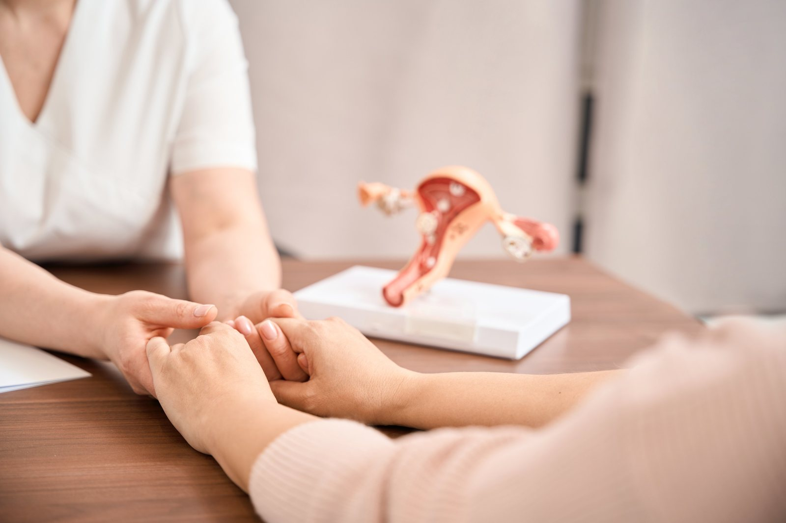
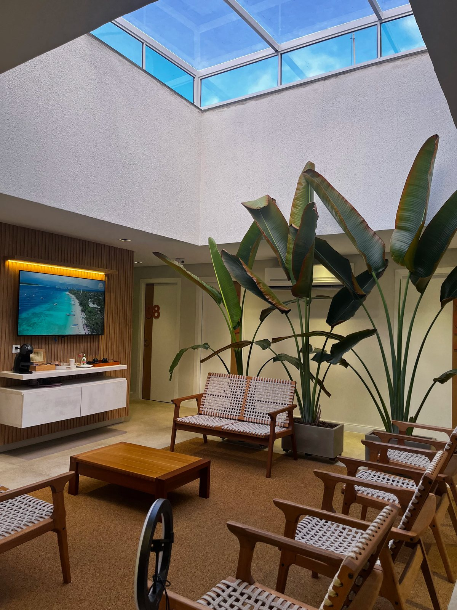
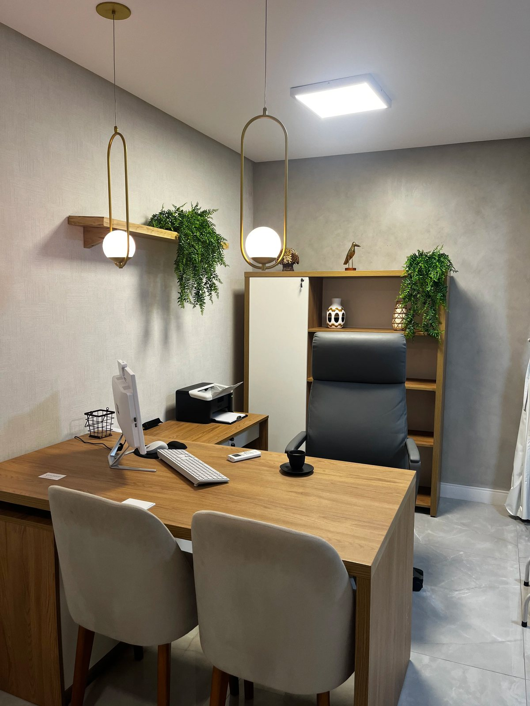
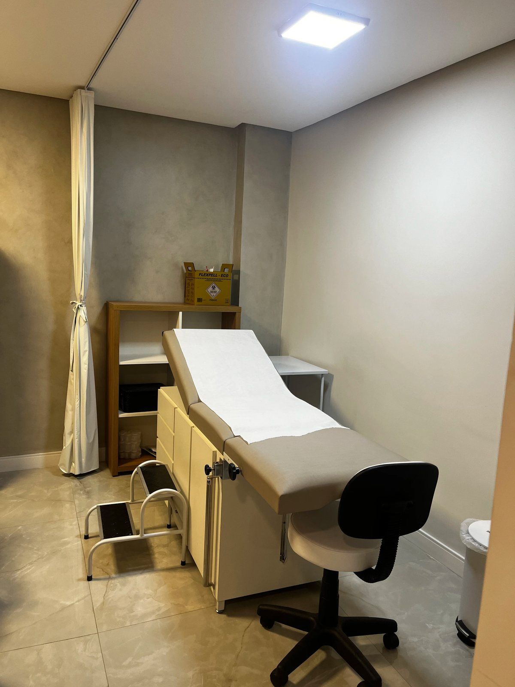
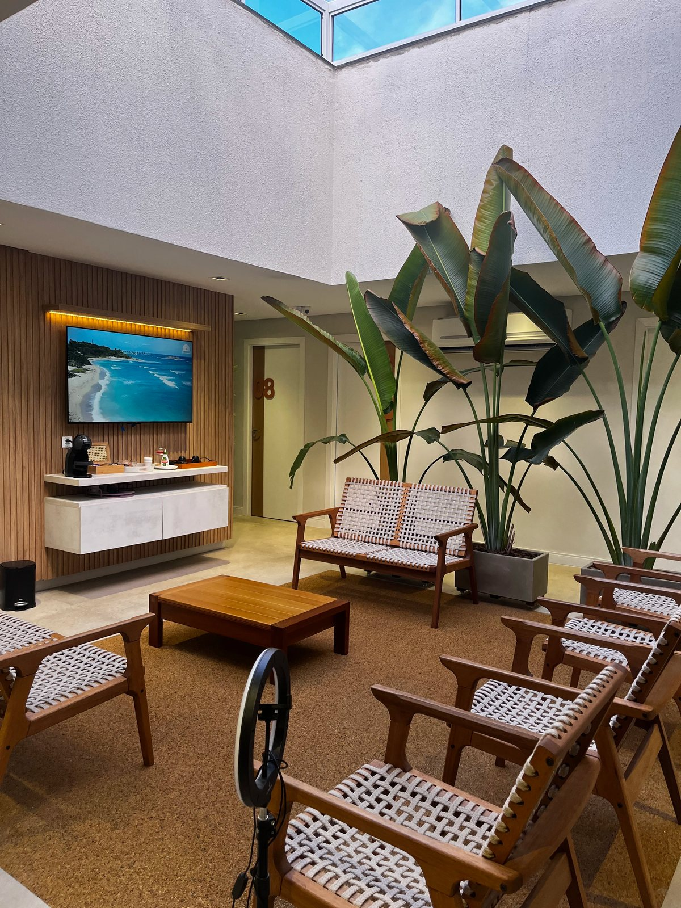

Coceira e ardência que voltam
Você já usou pomada, óvulo ou antibiótico, melhorou por uns dias e, pouco depois, o incômodo voltou.

Consulta ginecológica em Vitória/ES com microscopia do conteúdo vaginal e medição do pH para identificar a causa do corrimento, tratar de forma direcionada e acompanhar até a reavaliação.
Atendimento em Vitória/ES e região metropolitana

RQE 15655 · Ginecologia
CRM ES 18437 · CRM MG 87280
Microscopia e pH na consulta
Resultado pelo WhatsApp
Quando o incômodo se repete, ele deixa de ser só um sintoma e passa a afetar a rotina, a vida a dois e a forma como você se sente no próprio corpo.
Muitas vezes, o que falta não é mais um remédio. É saber exatamente o que está causando o corrimento.
Quero entender a causaVocê já usou pomada, óvulo ou antibiótico, melhorou por uns dias e, pouco depois, o incômodo voltou.
Um cheiro desagradável que deixa você preocupada o tempo todo, seja no trabalho, na rua ou em casa.
A irritação e o corrimento fazem você evitar a intimidade, e isso começa a pesar no relacionamento.
A sensação de que algo não vai bem no seu corpo e de que ninguém descobriu qual é a causa de verdade.


Candidíase, vaginose bacteriana, tricomoníase e outras alterações podem causar sintomas parecidos, mas pedem tratamentos diferentes.
Na consulta, a Dra. Mirna coleta uma pequena amostra do conteúdo vaginal, mede o pH e analisa o material no microscópio. Assim, o tratamento é indicado para a causa identificada no seu caso.
Coleta simples, feita durante o exameColeta simples, feita durante o exame ginecológico
Medição do pH vaginal na hora
Resultado e orientações pelo WhatsAppResultado, prescrição e orientações enviados pelo WhatsApp
Reavaliação com nova microscopiaReavaliação com nova microscopia já programada
Do primeiro atendimento à reavaliação, cada etapa tem um propósito: entender a causa e acompanhar a sua evolução.
01
Anamnese completa, sem pressa, e exame ginecológico. Você conta a sua história e é ouvida com atenção.
02
Coleta do conteúdo vaginal e medição do pH. O material é analisado no microscópio para achar a causa.
03
Você recebe o resultado, a prescrição e um guia curto de cuidados com a saúde íntima pelo WhatsApp.
04
Depois do tratamento inicial, uma nova microscopia confirma a evolução e orienta os próximos passos.
A reavaliação já sai programada.A reavaliação com nova microscopia já sai programada.
Na consulta, a Dra. Mirna avalia sua saúde, sua rotina e seus planos para ajudar você a escolher o método contraceptivo mais adequado para você.
Quando a escolha é por um método de longa duração, ela faz a inserção do DIU ou do Implanon. Antes de colocar o DIU, é feita a microscopia do conteúdo vaginal para evitar a inserção durante uma infecção vaginal.
Orientação individual sobre os métodosOrientação individual sobre os métodos contraceptivos
Inserção de DIU [tipos a confirmar]
Inserção de ImplanonInserção de Implanon (implante contraceptivo)
Microscopia antes da inserção do DIU
Além do diagnóstico dos corrimentos e da anticoncepção, a Dra. Mirna acompanha a sua saúde ginecológica como um todo.
Preventivo, DNA-HPV, rastreio do câncer de mama e painel de ISTs quando indicado. Avaliação completa.
Agendar avaliação
Alívio de fogachos, cansaço e insônia a partir dos 40 anos, com terapia hormonal quando for indicada.
Agendar avaliaçãoInvestigação de sangramento uterino anormal, dor pélvica e outras queixas, sempre com olhar integral.
Agendar avaliaçãoMédica ginecologista em Vitória/ES. [PENDENTE: formação, residência em Ginecologia e Obstetrícia e tempo de atuação].
Na consulta, estou 100% com você. Escuto a sua história com atenção, examino com cuidado e só depois defino o caminho, junto com você.
Meu foco é o diagnóstico preciso dos corrimentos, principalmente os que voltam, com a microscopia do conteúdo vaginal feita na própria consulta. Também acompanho mulheres na escolha da anticoncepção, com inserção de DIU e Implanon, e na transição do climatério e da menopausa.
O conteúdo vaginal é analisado no microscópio, e o tratamento segue a causa identificada no seu caso.
Durante a consulta, a atenção é toda sua: sem pressa, sem distrações e sem pular etapas do cuidado.
Sua história, seus sintomas e suas dúvidas são ouvidos com atenção antes da decisão do tratamento.
Da saúde íntima à anticoncepção e à menopausa, o cuidado olha para você como um todo, em cada fase.
Do momento em que você chega até o fim da consulta, cada detalhe foi pensado para você se sentir à vontade, com privacidade e sem pressa.




Se a sua dúvida não estiver aqui, fale direto com a equipe pelo WhatsApp. A resposta é rápida e sem compromisso.
Ficou alguma dúvida? Fale direto com a equipe pelo WhatsApp.
WhatsApp de atendimento(27) 99793-0889Tirar minha dúvidaA microscopia é feita sempre que há queixa de corrimento, coceira, ardência ou odor, e antes da inserção do DIU. Na consulta de rotina, a Dra. Mirna avalia se o exame é indicado para o seu caso.
Se você percebe corrimento, coceira, ardência, odor ou outro incômodo íntimo, agende uma avaliação. A consulta permite investigar o que está acontecendo no seu caso.
Isso depende da causa do corrimento e do seu histórico. A Dra. Mirna avalia os sintomas e orienta os próximos passos de forma individual.
A microscopia é realizada durante a consulta. [PENDENTE: confirmar o prazo de entrega do resultado e das orientações pelo WhatsApp].
A consulta é o primeiro passo para identificar a causa e definir o cuidado adequado. A necessidade de acompanhamento depende de cada caso.
A recorrência pode ter diferentes causas. Na consulta, a Dra. Mirna investiga o quadro antes de orientar o tratamento.
A coleta é feita durante o exame ginecológico. Se você tiver dúvidas ou desconforto, converse com a Dra. Mirna antes e durante o atendimento.
A análise ajuda a avaliar a saúde vaginal antes da inserção. A Dra. Mirna explica os achados e define com você os próximos passos.
Sim. A Dra. Mirna acompanha o climatério e a menopausa, avaliando sintomas e conversando sobre as opções de cuidado para cada mulher.
[PENDENTE: confirmar se o atendimento é particular e/ou quais convênios são aceitos]. Fale com a equipe pelo WhatsApp para saber mais.
O atendimento é na R. Antenor Guimarães, 55, em Vitória/ES. Para agendar, fale com a equipe pelo WhatsApp no número (27) 99793-0889.
O primeiro passo é investigar a causa. Agende sua consulta com microscopia e saia com um plano de tratamento e a reavaliação programada.
Agendar pelo WhatsAppAtendimento em Vitória/ES e região metropolitana

 Recepção
Recepção